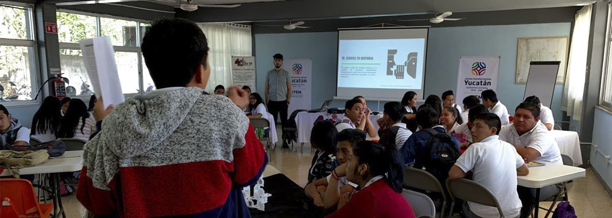

CONSTRUCCIÓN DE LA AGENDA PÚBLICA POR MEDIO DE IDEAS DE EMPRENDIMIENTO.
Participación ciudadana para el Plan Estatal de Desarrollo 2018-2024
El SEPLAN (Secretaría Técnica de Evaluación y Planeación) que tiene como objetivo coordinar el proceso de planeación para realizar, monitorear, asesorar e implementar el Plan Estatal de Desarrollo (PED) de Yucatán. Este plan el objetivo de establecer un mapeo de proyectos estratégicos a implementar por tanto los distintas entidades de gobierno como los ciudadanos yucatecos en el periodo 2018-2024.En estos trabajos conjunto con el IYEM (Instituto Yucateco del Emprendedor), por primera vez, buscan por medio de la participación ciudadana mapear las ideas de emprendedores del interior del estado para sumar a la construcción del Plan Estatal de Desarrollo por del IDEATÓN y otros dos procesos para recabar información.
SEDES VISITADAS
Gracias al apoyo recibido se logró aplicar la metodología en 9 diferentes sedes con la participación de 260 personas que proporcionaron desafios e ideas de emprendimiento para el PED.